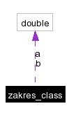

Dokumentacja klasy zakres_class
Klasa zawiera dwie liczby ktore sa krancami przedzialu (zmienne publiczne).
Wi巳ej...
#include <GAzakres.h>
Diagram wsp嗾pracy dla zakres_class:

[legenda]Lista wszystkich sk쓰dowych.
|
Atrybuty publiczne |
| double | a |
| | Pocz쎲ek przedzia씃.
|
| double | b |
| | Koniec przedzia씃.
|
Opis szczeg嗾owy
Klasa zawiera dwie liczby ktore sa krancami przedzialu (zmienne publiczne).
Dokumentacja atrybut雕 sk쓰dowych
Dokumentacja dla tej klasy zosta쓰 wygenerowana z plik雕:
Wygenerowano Thu May 27 19:51:31 2004 dla Silnik Genetyczny programem
 1.3.7
1.3.7